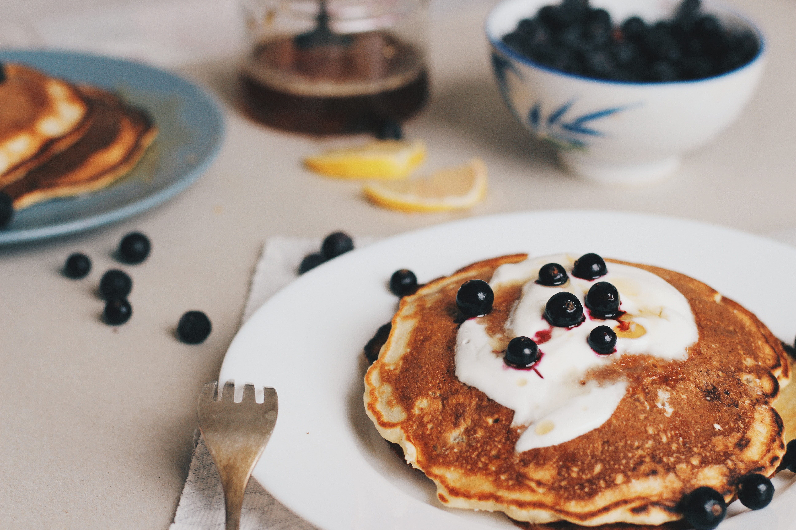
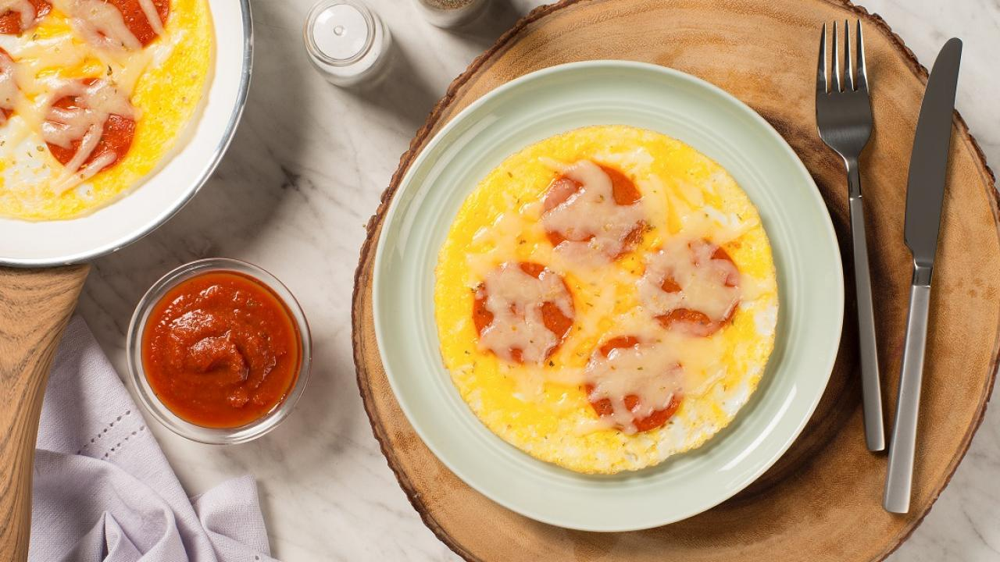
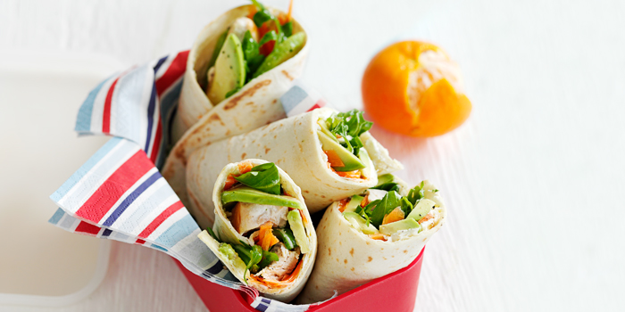

Recipies
Banana Pancakes
A quick and easy low-calorie breakfast that can be whipped up in ten minutes with only a few ingredients.
Click here for instructions
- In a bowl, mash 1 large banana with a fork until it resembles a thick puree.
- Stir in 2 beaten eggs, a pinch of baking powder (gluten-free if coeliac) and a splash of vanilla extract
- Heat a large non-stick frying pan or pancake pan over a medium heat and brush with ½ tsp oil.
- Using half the batter, spoon two pancakes into the pan, cook for 1-2 mins each side, then tip onto a plate. Repeat the process with another ½ tsp oil and the remaining batter.
- Top the pancakes with a fruit and topping of your choice.
Morning Pizza
Morning Pizza! A quick recipie where an omlette acts as a pizza base topped with pepperoni and grated cheese. This can be made in ten minutes. Requires 2 eggs, 8 slices of pepperoni, 2 tablespoons of mozzarella cheese and 3 tablespoons of pizza or pasta sauce
Click here for instructions
- Whisk eggs and oregano, if using, in small bowl.
- Spray 8-inch (20 cm) non-stick skillet with cooking spray. Heat skillet over medium heat.
- Pour egg mixture into skillet. With spatula, gently push cooked portions toward centre. Tilt and rotate skillet to allow uncooked egg to flow into empty spaces.
- Top with pepperoni and cheese. Cover and cook until eggs are set and cheese is melted, about 2 minutes.
- Slide pizza onto plate. Serve with sauce for dipping.
Jar Salad

Layers of mixed vegetable and couscous salad served in a jar rather than a plate. Easy storage as a packed lunch!
Click here for instructions
- Begin with a layer of couscous at the bottom.
- then a layer of sliced tomatos, fullsized or cherry.
- A layer of red, yellow or green peppers.
- A layer of lettuce or spinach.
- Finally, top it off with a layer of sliced cucumber
Chicken, Carrot and Avocado Roll
A mix of chicken, fruit and veg wrapped in a soft tortilla wrap.
Click here for instructions
- Spread low-fat soft cheese over the wrap.
- Top with sliced chicken and carrot.
- Spread mashed avocado on top.
- Tightly rollup each tortilla and wrap with cling film.
- Place in the fridge to chill and cut up and serve when ready.